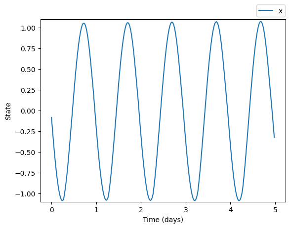
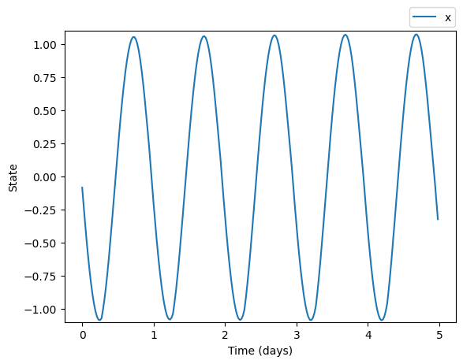
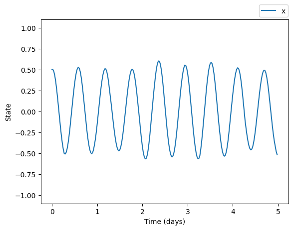
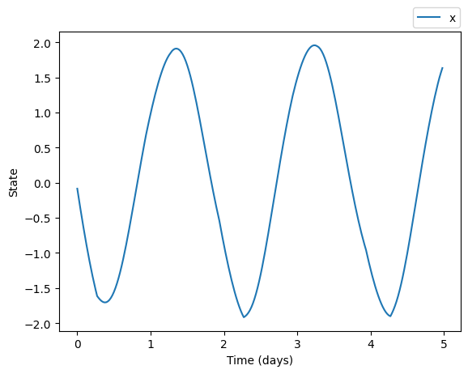
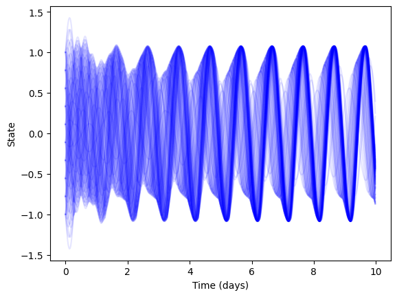
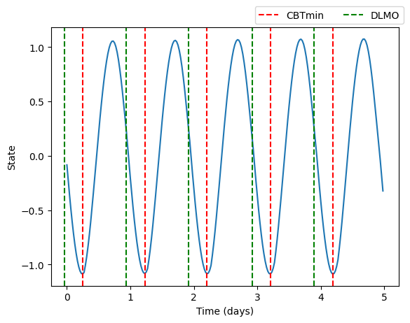

plt.plot(time/24.0, trajectory.states[:,0], label='x')
plt.xlabel('Time (days)')
plt.ylabel('State')
plt.show()
The circadian.models module contains the essential tools for simulating circadian rhythms. The base class DynamicalTrajectory handles differential equation solutions, while the CircadianModel class handles the implementation of the models themselves. The first part of the documentation focuses on how to simulate circadian rhythms while the second part describes each model briefly. For a description of each implementation see the API Documentation.
To simulate a circadian model we need to provide a set of timepoints where we want to calculate the solution and a set of light inputs for each timepoint
import numpy as np
import matplotlib.pyplot as plt
from circadian.models import Forger99
from circadian.lights import LightSchedule
simulation_days = 5
dt = 0.5 # hours
time = np.arange(0, 24 * simulation_days, dt)
light_schedule = LightSchedule.Regular()
light_input = light_schedule(time)
model = Forger99()
trajectory = model(time, input=light_input)we can plot the solution by acessing the trajectory’s states
plt.plot(time/24.0, trajectory.states[:,0], label='x')
plt.xlabel('Time (days)')
plt.ylabel('State')
plt.show()
In the example above, we are not defining initial conditions nor parameters. This is because each model in the library has a default set of parameters and initial conditions. Initial conditions and parameters used in the simulation can be accessed by
{'taux': 24.2,
'mu': 0.23,
'G': 33.75,
'alpha_0': 0.05,
'beta': 0.0075,
'p': 0.5,
'I0': 9500.0,
'k': 0.55,
'cbt_to_dlmo': 7.0}We can run simulations with custom parameters and initial conditions by
simulation_days = 5
dt = 0.5 # hours
time = np.arange(0, 24 * simulation_days, dt)
light_schedule = LightSchedule.Regular()
light_input = light_schedule(time)
custom_parameters = {
'taux': 14.0, 'mu': 0.3, 'G': 34.0, 'alpha_0': 0.07,
'delta': 0.0095, 'p': 0.7, 'I0': 9300.0, 'kparam': 0.75,
'cbt_to_dlmo': 7.0}
custom_initial_condition = np.array([0.5, 0.1, 0.1])
model = Forger99(custom_parameters)
trajectory = model(time, custom_initial_condition, light_input)plt.plot(time/24.0, trajectory.states[:,0], label='x')
plt.xlabel('Time (days)')
plt.ylabel('State')
plt.show()
When defining custom parameters we can specify only a subset and the rest will maintain their default values (or any previously defined values).

Models accept arrays of initial conditions allowing to simulate from multiple initial conditions at once. For example, to simulate the Forger99 model from 100 different initial conditions we can do
simulation_days = 10
dt = 0.5 # hours
time = np.arange(0, 24 * simulation_days, dt)
light_schedule = LightSchedule.Regular()
light_input = light_schedule(time)
x_values = np.linspace(-1.0, 1.0, 10)
xc_values = np.linspace(-1.0, 1.0, 10)
x_xc_stack = np.dstack(np.meshgrid(x_values, xc_values)).reshape(-1, 2)
multiple_initial_conditions = np.hstack((x_xc_stack, np.zeros((x_xc_stack.shape[0], 1))))
multiple_initial_conditions = multiple_initial_conditions.T
model = Forger99()
trajectory = model(time, multiple_initial_conditions, light_input)Note that we have to format the initial conditions as a numpy array of dimensions (3, n) where n is the total number of initial conditions and 3 is the number of states in the model.
The resulting trajectory contains all the solutions in the same order as the initial conditions
We can plot the solution for each initial condition by
for idx in range(trajectory.states.shape[2]):
plt.plot(time/24.0, trajectory.states[:,0,idx],
color='b', alpha=0.1)
plt.xlabel('Time (days)')
plt.ylabel('State')
plt.show()
This is the recommended method to simulate multiple initial conditions–by passing a numpy array to the model. Our implementation takes advantage of numpy’s vectorization to speed up the calculation. If we simulate each initial condition individually, the simulation will be slower.
Models support the estimation of Dim Light Melatonin Onset (DLMO) and Core Body Temperature Minimum (CBTmin) directly from the solution

Models also support the calculation of amplitude and phase at any desired timepoint
simulation_days = 5
dt = 0.5 # hours
time = np.arange(0, 24 * simulation_days, dt)
light_schedule = LightSchedule.Regular()
light_input = light_schedule(time)
model = Forger99()
trajectory = model(time, input=light_input)
t_final = time[-1]
final_phase = model.phase(time=t_final)
final_amplitude = model.amplitude(time=t_final)Final phase: 1.8767451135044504
Final amplitude: 1.0730477511869494The Forger99 model is taken from Forger, Jewett, and Kronauer’s 1999 article which defines a simplification of previous iterations of the van der Pol based oscillator models published in the 1990s. It is one of the most popular models in the circadian literature. The implementation in this package uses the parameters taken from Serkh and Forger 2014 rather than the parameters from the original paper.
The model states are defined by three dynamic variables: \(x\), \(x_c\), and \(n\). These states are related to circadian rhythms by defining the core body temperature minimum (a biomarker for circadian state) to be the minimum of the \(x\) variable.
The differential equations governing the evolution of the Forger99 model are:
\(\frac{dx}{dt} = \frac{\pi}{12}(x_c + B)\)
\(\frac{dx_c}{dt} = \frac{\pi}{12}\left\{\mu \left( x_c - \frac{4x_{c}^3}{3} \right) - x \left[ \left( \frac{24}{0.99669 \tau_x} \right)^2 + kB \right] \right\}\)
\(\frac{dn}{dt} = 60[\alpha(I)(1-n)-\beta n]\)
where
\(\alpha(I) = \alpha_0\left( \frac{I^p}{I_0^p}\right)\)
\(B = G(1-n)\alpha(I)(1-0.4x)(1-0.4x_c)\)
The default parameters for this model are:
{'taux': 24.2,
'mu': 0.23,
'G': 33.75,
'alpha_0': 0.05,
'beta': 0.0075,
'p': 0.5,
'I0': 9500.0,
'k': 0.55,
'cbt_to_dlmo': 7.0}The cbt_to_dlmo parameter is used to convert the core body temperature minimum to DLMO. The default behavior is DLMO ocurring 7 hours before CBTmin.
The Jewett99 model is taken from Jewett, Forger, and Kronauer’s 1999 article which defines several refinements to a van der Pol oscillator model developed by Kronauer previously. One of the main features of this model are the high-order terms in the differential equations which allow for a more accurate representation of the circadian system than previous models.
Similarly to Forger99 the model states are defined by three dynamic variables: \(x\), \(x_c\), and \(n\). The variable \(x\) is related to the core body temperature and \(n\) to the processed light input.
The differential equations governing the evolution of the Jewett99 model are:
\(\frac{dx}{dt} = \frac{\pi}{12} \left[x_c + \mu \left(\frac{x}{3} + \frac{4x^3}{3} - \frac{256 x^7}{105}\right) + B\right]\)
\(\frac{dx_c}{dt} = \frac{\pi}{12} \left\{ q B x_c - \left[ \left( \frac{24}{0.99729 \tau_{x}} \right)^2 + k B \right] x \right\}\)
\(\frac{dn}{dt} = 60[\alpha(I)(1-n)-\beta n]\)
where
\(\alpha(I) = \alpha_0\left( \frac{I^p}{I_0^p}\right)\)
\(B = G(1-n)\alpha(I)(1-0.4x)(1-0.4x_c)\)
The default parameters for this model are:
{'taux': 24.2,
'mu': 0.13,
'G': 19.875,
'beta': 0.013,
'k': 0.55,
'q': 0.3333333333333333,
'I0': 9500,
'p': 0.6,
'alpha_0': 0.16,
'phi_ref': 0.8,
'cbt_to_dlmo': 7.0}The cbt_to_dlmo and phi_ref parameters are used to calculate the core body temperature minimum and convert it to DLMO. The CBTmin is calculated as the minimum of the \(x\) variable plus a shift of \(\phi_{\text{ref}}=0.8\) hours. The DLMO is calculated as CBTmin minus 7.0 hours.
The Hannay19 model is taken from Hannay, Booth, and Forger’s 2019 article. This model isn’t based on a van der Pol oscillator and instead it is systematically derived from a high-dimensional model for each clock neuron using the \(m^2\) ansatz (Hannay et al. 2018). The Hannay19 implementation corresponds to the single population model within the article.
The model describes the circadian state using polar coordinates and features a slight modification fo the light processing function found in van der Pol type models. Thus, the model states are defined by: \(R\), \(\psi\), and \(n\).
The differential equations governing the evolution of the Hannay19 model are:
\(\frac{dR}{dt} = - (D + \gamma)R + \frac{K}{2}cos(\beta)R(1-R^4) + L_R(R, \psi)\)
\(\frac{d\psi}{dt} = \omega_0 + \frac{K}{2}sin(\beta)(1+R^4) + L_{\psi}(R,\psi)\)
\(\frac{dn}{dt} = 60\left[\alpha(I)(1-n)-\delta n \right]\)
where
\(L_R(R,\psi) = \frac{A_1}{2}B(t)(1-R^4)cos(\psi + \beta_{L1}) + \frac{A_2}{2}B(t)R(1-R^8)cos(2\psi + \beta_{L2})\)
\(L_{\psi}(R, \psi) = \sigma B(t) - \frac{A_1}{2}B(t)\left(\frac{1}{R} + R^3 \right)\sin(\psi + \beta_{L1}) - \frac{A_2}{2}B(t)(1+R^8)\sin(2\psi + \beta_{L2})\)
\(\alpha(I) = \frac{\alpha_0 I^p}{I^p + I_0}\)
\(B(t) = G(1-n)\alpha(L)\)
The default parameters for this model are:
{'tau': 23.84,
'K': 0.06358,
'gamma': 0.024,
'Beta1': -0.09318,
'A1': 0.3855,
'A2': 0.1977,
'BetaL1': -0.0026,
'BetaL2': -0.957756,
'sigma': 0.0400692,
'G': 33.75,
'alpha_0': 0.05,
'delta': 0.0075,
'p': 1.5,
'I0': 9325.0,
'cbt_to_dlmo': 7.0}The cbt_to_dlmo parameter is used to convert the core body temperature minimum to DLMO. The default behavior is DLMO ocurring 7 hours before CBTmin.
The Hannay19TP model comes from the same article as Hannay19 but stems from two populations of clock neurons rather than one. These two populations are the dorsal and ventral ones which define the model states to be: \(R_v\), \(R_d\), \(\psi_v\), \(\psi_d\), and \(n\).
The differential equations governing the evolution of the Hannay19TP model are:
\(\frac{dR_v}{dt} = -\gamma R_v + \frac{K_{vv}}{2} R_v (1 - R_{v}^4) + \frac{K_{dv}}{2}R_d (1 - R_{v}^4)\cos(\psi_d - \psi_v) + L_R(R_v, \psi_v)\)
\(\frac{dR_d}{dt} = -\gamma R_d + \frac{K_{dd}}{2} R_d (1 - R_{d}^4) + \frac{K_{vd}}{2} R_v (1 - R_{d}^4)\cos(\psi_d - \psi_v)\)
\(\frac{d\psi_v}{dt} = \omega_v + \frac{K_{dv}}{2} R_d \left( \frac{1}{R_v} + R_{v}^3\right)\sin(\psi_d - \psi_v) + L_\psi(R_v, \psi_v)\)
\(\frac{d\psi_d}{dt} = \omega_d - \frac{K_{vd}}{2} R_v \left( \frac{1}{R_d} + R_{d}^3\right)\sin(\psi_d - \psi_v)\)
\(\frac{dn}{dt} = 60\left[\alpha(I)(1-n)-\delta n \right]\)
where
\(L_R(R_v,\psi_v) = \frac{A_1}{2}B(t)(1-R_v^4)cos(\psi_v + \beta_{L1}) + \frac{A_2}{2}B(t)R_v(1-R_v^8)cos(2\psi_v + \beta_{L2})\)
\(L_{\psi}(R_v, \psi_v) = \sigma B(t) - \frac{A_1}{2}B(t)\left(\frac{1}{R_v} + R_v^3 \right)\sin(\psi_v + \beta_{L1}) - \frac{A_2}{2}B(t)(1+R_v^8)\sin(2\psi_v + \beta_{L2})\)
\(\alpha(I) = \frac{\alpha_0 I^p}{I^p + I_0}\)
\(B(t) = G(1-n)\alpha(L)\)
The default parameters for this model are:
{'tauV': 24.25,
'tauD': 24.0,
'Kvv': 0.05,
'Kdd': 0.04,
'Kvd': 0.05,
'Kdv': 0.01,
'gamma': 0.024,
'A1': 0.440068,
'A2': 0.159136,
'BetaL': 0.06452,
'BetaL2': -1.38935,
'sigma': 0.0477375,
'G': 33.75,
'alpha_0': 0.05,
'delta': 0.0075,
'p': 1.5,
'I0': 9325.0,
'cbt_to_dlmo': 7.0}The cbt_to_dlmo parameter is used to convert the core body temperature minimum to DLMO. The default behavior is DLMO ocurring 7 hours before CBTmin.
The Hilaire07 model is taken from Hilaire et al. 2007 which extends the Jewett99 model to include a non-photic input. The model states are defined by three dynamic variables: \(x\), \(x_c\), and \(n\) whereas the inputs are light and sleep/wake state. The variable \(x\) is related to the core body temperature and \(n\) to the processed light input.
The differential equations governing the evolution of the Hilaire07 model are:
\(\frac{dx}{dt} = \frac{\pi}{12} \left[x_c + \mu \left(\frac{x}{3} + \frac{4x^3}{3} - \frac{256 x^7}{105}\right) + B + N_{s}\right]\)
\(\frac{dx_c}{dt} = \frac{\pi}{12} \left\{ q B x_c - \left[ \left( \frac{24}{0.99729 \tau_{x}} \right)^2 + k B \right] x \right\}\)
\(\frac{dn}{dt} = 60[\alpha(I)(1-n)-\beta n]\)
where
\(\alpha(I) = \alpha_0\left( \frac{I^p}{I_0^p}\right) \left( \frac{I}{I + 100} \right)\)
\(B = G(1-n)\alpha(I)(1-0.4x)(1-0.4x_c)\)
\(N_{s} = \hat{N}_{s} \left[1 - \tanh(10x) \right]\)
\(\hat{N}_{s} = \left\{\begin{matrix} \frac{\rho}{3} & \text{if} \ \ \ \psi_{cx} \in (16.5, 21.0) \\ (\frac{1}{3} - \sigma) \rho & \text{otherwise} \end{matrix}\right.\)
\(\psi_{cx} = \left[ (t \mod 24) - 24\frac{\phi_{xcx} + \phi_{ref}}{2\pi} \right]\mod 24\)
\(\sigma = \left\{\begin{matrix} 1 & \text{if asleep} \\ 0 & \text{if awake} \end{matrix}\right.\)
Note that both \(I\) and \(\sigma\) are inputs to the model
The default parameters for this model are:
{'taux': 24.2,
'G': 37.0,
'k': 0.55,
'mu': 0.13,
'beta': 0.007,
'q': 0.3333333333333333,
'rho': 0.032,
'I0': 9500.0,
'p': 0.5,
'a0': 0.1,
'phi_xcx': -2.98,
'phi_ref': 0.97,
'cbt_to_dlmo': 7.0}The cbt_to_dlmo and phi_ref parameters are used to calculate the core body temperature minimum and convert it to DLMO. The CBTmin is calculated as the minimum of the \(x\) variable plus a shift of \(\phi_{\text{ref}}=0.97\) hours. The DLMO is calculated as CBTmin minus 7.0 hours.
The Skeldon23 model is based on Skeldon et al. 2023 which combines a sleep pressure model with Forger99 to estimate realistic sleep/wake patterns. The model states are defined by four dynamic variables: \(x\), \(x_c\), \(n\), and \(H\). The variable \(x\) is related to the core body temperature, \(n\) to the processed light input, and \(H\) to the sleep pressure signal. Note that in our implementation we have favored Forger99’s notation of variables. In the original article, Skeldon et al. use variables \(x\) and \(y\) to indicate \(x_c\) and \(x\) respectively. Additionally, in this implementation, we have rescaled parameters to be defined in terms of hours rather than seconds. In addition to providing the states over time, the model also predicts sleep/wake patterns for each timepoint.
The differential equations governing the evolution of the Skeldon23 model are:
\(\frac{dx}{dt} = \frac{1}{\kappa} \left(x_c + B \right)\)
\(\frac{dx_c}{dt} = \frac{1}{\kappa}\left\{\gamma \left( x_c - \frac{4x_{c}^3}{3} \right) - x \left[ \left( \frac{24}{f \tau_x} \right)^2 + kB \right] \right\}\)
\(\frac{dn}{dt} = 60[\alpha(\tilde{I})(1-n)-\beta n]\)
$ = $
where
\(S = \left\{\begin{matrix} 1 & \text{if asleep} \\ 0 & \text{if awake} \end{matrix}\right.\)
\(\tilde{I} = (1 - S) I\)
\(\alpha(\tilde{I}) = \alpha_0\left( \frac{\tilde{I}}{I_0}\right)^p\)
\(B = G(1-n)\alpha(\tilde{I})(1-bx)(1-bx_c)\)
the variable \(S\) switches automatically based on the sleep pressure signal \(H\) and the circadian input to the sleep model \(C\):
\(C(t) = c_{20} + \alpha_{21}x_{c} + \alpha_{22}x + \beta_{21}x_{c}^2 + \beta_{22}x_{c}x + \beta_{23}x^2\)
The change from wake to sleep occurs when \(H\) reaches
\(H^{+}(t) = \overline{H}_{0} + \frac{\Delta}{2} + c_{a} C(t)\)
and the change from sleep to wake occurs when \(H\) reaches
\(H^{-}(t) = \overline{H}_{0} - \frac{\Delta}{2} + c_{a} C(t)\)
The default parameters for this model are:
{'mu': 17.78,
'chi': 45.0,
'H0': 13.0,
'Delta': 1.0,
'ca': 1.72,
'tauc': 24.2,
'f': 0.99669,
'G': 19.9,
'p': 0.6,
'k': 0.55,
'b': 0.4,
'gamma': 0.23,
'alpha_0': 0.16,
'beta': 0.013,
'I0': 9500.0,
'kappa': 3.819718634205488,
'c20': 0.7896,
'alpha21': -0.3912,
'alpha22': 0.7583,
'beta21': -0.4442,
'beta22': 0.025,
'beta23': -0.9647,
'S0': 0.0,
'cbt_to_dlmo': 7.0,
'forced_wakeup_light_threshold': None}The cbt_to_dlmo parameter is used to convert the core body temperature minimum to DLMO. The default behavior is DLMO ocurring 7 hours before CBTmin.
DynamicalTrajectory (time:numpy.ndarray, states:numpy.ndarray)
A class to store solutions of differential equation models that contains both the time points and the states
| Type | Details | |
|---|---|---|
| time | ndarray | time points |
| states | ndarray | state at time points |
| Returns | None |
DynamicalTrajectory.__call__ (timepoint:float)
Return the state at time t, linearly interpolated
| Type | Details | |
|---|---|---|
| timepoint | float | |
| Returns | ndarray | state of the system |
DynamicalTrajectory.get_batch (batch_idx:int)
Obtain the trajectory for a single batch
CircadianModel (default_params:dict, num_states:int, num_inputs:int, default_initial_condition:numpy.ndarray)
Abstract base class for circadian models that defines the common interface for all implementations
| Type | Details | |
|---|---|---|
| default_params | dict | default parameters for the model |
| num_states | int | number of independent variables in the model |
| num_inputs | int | number of inputs to the model such as light or wake state |
| default_initial_condition | ndarray | default initial conditions for the model |
| Returns | None |
CircadianModel.step_rk4 (t:float, state:numpy.ndarray, input:numpy.ndarray, dt:float)
Integrate the state of the model for one timestep using a fourth-order Runge-Kutta algorithm. Assumes a constant light value for the time step
| Type | Details | |
|---|---|---|
| t | float | time |
| state | ndarray | dynamical state of the model |
| input | ndarray | inputs to the model such as light or wake state |
| dt | float | step size in hours |
| Returns | ndarray |
CircadianModel.integrate (time:numpy.ndarray, initial_condition:numpy.ndarray=None, input:numpy.ndarray=None)
Solve the model for specific timepoints given initial conditions and model inputs
| Type | Default | Details | |
|---|---|---|---|
| time | ndarray | time points for integration. Time difference between consecutive values determines step size of the solver | |
| initial_condition | ndarray | None | initial state of the model |
| input | ndarray | None | model input (such as light or wake) for each time point |
| Returns | DynamicalTrajectory |
CircadianModel.__call__ (time:numpy.ndarray, initial_condition:numpy.ndarray=None, input:numpy.ndarray=None)
Wrapper to integrate
| Type | Default | Details | |
|---|---|---|---|
| time | ndarray | time points for integration. Time difference between each consecutive pair of values determines step size of the solver | |
| initial_condition | ndarray | None | initial state of the model |
| input | ndarray | None | model input (such as light or wake) for each time point |
CircadianModel.get_parameters_array ()
Returns the parameters for the model as a numpy array
CircadianModel.equilibrate (time:numpy.ndarray, input:numpy.ndarray, num_loops:int=10)
Equilibrate the model by looping the given light_estimate. Assumes the schedule repeats periodically after it ends
| Type | Default | Details | |
|---|---|---|---|
| time | ndarray | time points for integration. Time difference between each consecutive pair of values determines step size of the solver | |
| input | ndarray | model input (such as light or wake) for each time point | |
| num_loops | int | 10 | number of times to loop the input |
| Returns | ndarray | final state of the model |
CircadianModel.amplitude (trajectory:__main__.DynamicalTrajectory=None, time:float=None)
Calculates the amplitude of the model at a given timepoint
| Type | Default | Details | |
|---|---|---|---|
| trajectory | DynamicalTrajectory | None | trajectory to calculate the amplitude for. If None, the amplitude is calculated for the current trajectory |
| time | float | None | timepoint to calculate the amplitude at. If None, the amplitude is calculated for the entire trajectory |
| Returns | float |
CircadianModel.phase (trajectory:__main__.DynamicalTrajectory=None, time:float=None)
Calculates the phase of the model at a given timepoint
| Type | Default | Details | |
|---|---|---|---|
| trajectory | DynamicalTrajectory | None | trajectory to calculate the phase for. If None, the phase is calculated for the current trajectory |
| time | float | None | timepoint to calculate the phase at. If None, the phase is calculated for the entire trajectory |
| Returns | float |
CircadianModel.cbt (trajectory:__main__.DynamicalTrajectory=None)
Finds the core body temperature minumum markers along a trajectory
| Type | Default | Details | |
|---|---|---|---|
| trajectory | DynamicalTrajectory | None | trajectory to calculate the cbt for. If None, the cbt is calculated for the current trajectory |
| Returns | ndarray | array of times when the cbt occurs |
CircadianModel.dlmos (trajectory:__main__.DynamicalTrajectory=None)
Finds the Dim Light Melatonin Onset (DLMO) markers along a trajectory
| Type | Default | Details | |
|---|---|---|---|
| trajectory | DynamicalTrajectory | None | trajectory to calculate the dlmos for. If None, the dlmos are calculated for the current trajectory |
| Returns | ndarray | array of times when dlmo occurs |
Forger99 (params=None)
Implementation of Forger’s 1999 model from the article ‘A simpler model of the human circadian pacemaker’
Jewett99 (params=None)
Implementation of Jewett’s 1999 model from the article ‘Revised Limit Cycle Oscillator Model of Human Circadian Pacemaker’
Hannay19 (params=None)
Implementation of Hannay’s 2019 single population model from the article ‘Macroscopic models for human circadian rhythms’
Hannay19TP (params=None)
Implementation of Hannay’s 2019 two population model from the article ‘Macroscopic models for human circadian rhythms’
Hilaire07 (params=None)
Implementation of Hilaire’s 2007 model from the article ‘Addition of a non-photic component to a light-based mathematical model of the human circadian pacemaker’
Breslow13 (params=None)
Implementation of melatonin suppression model from Breslow’s 2013 article ‘A Mathematical Model of the Circadian Phase-Shifting Effects of Exogenous Melatonin’
Skeldon23 (params=None)
Implementation of Skeldon’s 2023 model from the article ‘Method to determine whether sleep phenotypes are driven by endogenous circadian rhythms or environmental light by combining longitudinal data and personalised mathematical models’